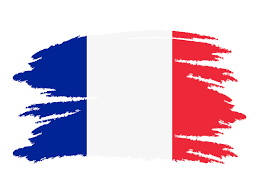
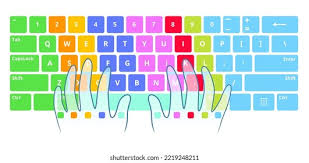

Foreign language
Since I place a high importance on personal development, I have always tried to learn several languages. The foreign languages I have studied and my experiences with them are listed below.
English
Since English is regarded as a necessary language in many African nations, it was the first foreign language I learnt. It is the language I am most fluent in, though I am still working toward mastery.
French
In my early school years, French became my second foreign language. At first, I didn't realize how important learning a second language was. But I went on to study French in high school and received an A1 certification.
Arabic
I learned Arabic by accident, mostly as a result of my childhood fascination with Arabic cartoon films. I hope to become proficient in it in the future.
Relevant skill
Below are the skills I have developed to support my career aspirations.
Typing
Using a variety of internet resources, I have improved my typing abilities. My accuracy and efficiency when working on digital activities have increased as a result of this.
 The typing practice I usecommunication
Both personal and professional contexts require effective communication. In order to promote stronger bonds and teamwork, I'm always trying to get better at this ability.
Harvard Business Review.Voluntary work
Below is a video showcasing some of the voluntary work I have participated in, which has been both rewarding and impactful.